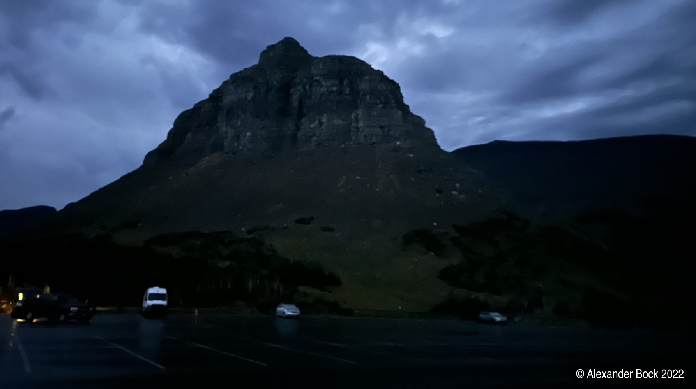

Northwest National Parks Trip 2022
Alex Bock 2022-10-03
Overview
I visited four national parks last week, enjoying uncharacteristically warm fall weather while hiking at Grand Teton, Yellowstone, Glacier, and Mount Rainier. The trip started with a flight to the Jackson Hole airport in Grand Teton National Park. This was followed by a short drive to Yellowstone National Park, a several hour drive to Glacier National Park, and a long drive to western Washington. I ultimately departed from Seattle-Tacoma International Airport.
Grand Teton National Park
The view from Jackson Lake Lodge was excellent:

Living up to its name, Moose Pond near Jenny Lake was host to a moose:
All visitors to Grand Teton are obligated to mill about in the cold for an hour around sunrise at Oxbow Bend. Not pictured: approximately twenty photographers setting up tripods at any conceivable place to stand along the river, the paved road ten feet behind me, and the crowd of smartphones shooting distant mountains using a flash from the nearby parking lot.
Yellowstone National Park
While driving through Yellowstone, I encountered a positively valenced traffic jam; bison regularly graze near and cross the park roads:
Although one is of course obligated by Yellowstone tradition to check out Old Faithful, the crowd can be avoided thanks to the Upper Geyser Basin Observation Point Trail:

At the beginning of an early morning hike on the West Thumb Overlook Loop Trail, I was greeted by the highly unsettling shriek of an elk:
and a chilly morning view of the lake and woodland geysers:
The geyers near the Grand Prismatic Spring constantly produce copious amounts of steam:
I made a brief stop at the very crowded viewpoint for the Grand Canyon of the Yellowstone which has some nice waterfalls:
On my last night at Yellowstone, I went out to the lake at night and enjoyed a clear, dark sky with the Big Dipper over the water:
Glacier National Park
On my first day at Glacier National Park, I drove Going-to-the-Sun Road from West Glacier to Saint Mary and back, stopping in many places to enjoy the view or go on a short hike:
I noticed during the drive that the large Logan Pass parking lot was completely full, and decided that I would start off before sunrise the next day to park there and hike to Grinnell Glacier Overlook. Due to construction, Going-to-the-Sun road did not open until 6 AM. I arrived at Logan Pass and headed across the road to the trail as several other vehicles started arriving:
Shortly after the sun came out, a wall of opaque fog rapidly rolled into the valley:
The fog lent a unique character to some of the trail's ledges. Is a narrow path between a rock wall and a sheer drop more unsettling or less when impenetrable fog blocks the view of how high up you are?
The fog did not overstay its welcome, disappearing just as quickly as it had come before the novelty could wear off. The view was mostly clear for the rest of the hike:
After almost eight miles one way and couple thousand feet of total elevation gain, the sudden view over the saddle at Grinnell Glacier Overlook was worth it:

As the sun just began to peek out, I turned around to look back at the valley and had the incredible luck to see a very clear rainbow over the heart of Glacier National Park:
Mount Rainier National Park
There are several different sections of Mount Rainier National Park. The most popular section is called Paradise, and someone who intends to "go to Mount Rainier National Park" without further context should probably set their GPS to the "Henry M Jackson Memorial Visitor Center".
I decided to check out one of the less traveled sections of the park instead, Mowich Lake. After driving down half of a long, unpaved road, I was greeted with a peek of Mount Rainier:
However, this was the last I saw of the mountain, as the remainder of the unpaved road headed into dense woods to the Mowich Lake Campground with a tranquil view of the lake:
The next day, I set out early for the Paradise entrance to ensure I could find parking as I expected it would fill up quickly on a temperate Saturday. I hiked to Pebble Creek and then continued about halfway to Camp Muir before the wind and snow at high elevation convinced me to return in the future equipped more appropriately.
The trail provided excellent views of Mount Rainier:
Camera Details
All photos on this page were taken with an iPhone 14 Pro except the elk, the moose, and the first photo of Oxbow Bend which were taken with a Sony A7R III (50 mm ƒ/1.8). I tried to minimize the time I spent behind a camera instead of hiking, and managed to keep the A7R III in my bag - except for the wildlife (which simultaneously required reach and resolution where my phone can only provide one of these at a time) and Oxbow Bend at sunrise (where, as previously stated, one is obligated to huddle with every other photographer in Yellowstone to observe both the sunrise and the planet's largest concentration of graduated neutral density filters).
The photo of the Big Dipper was a 3-second handheld iPhone "Night mode" shot. This could not compete with astrophotography done using a full-frame camera on a tripod, but as they say, "ƒ/6.2 equivalent and be there for three seconds". Not bad for a device that fits in your pocket while you stroll around a lake.
Wrapping Up
Glacier National Park was the highlight of the trip for me; I highly recommend visiting. The overall route was great if you don't mind the two long drives. I did not see any bears during my trip, but most of the hikes in the three eastern parks are in territory where carrying bear spray is prudent.
Back to Index